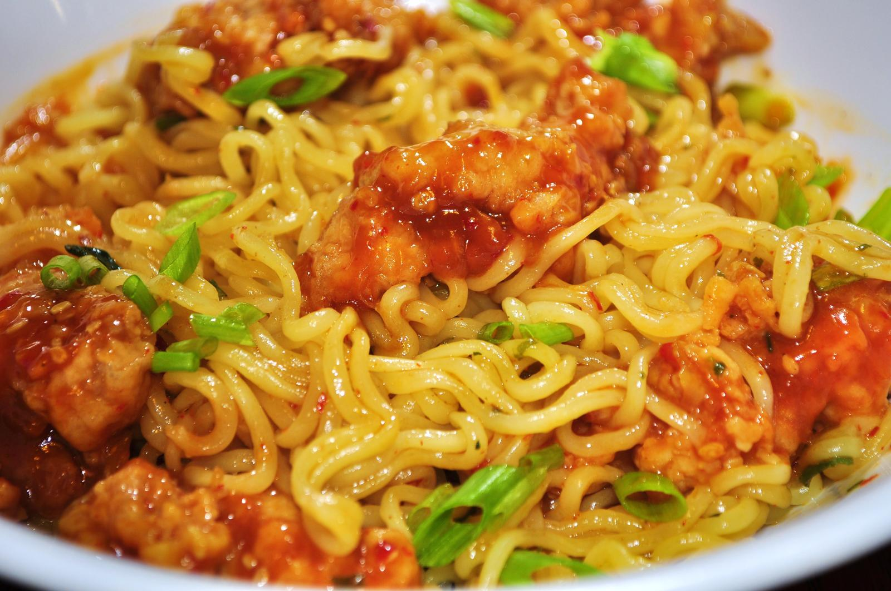

Ramen with Orange Chicken
Return to Homepage

So What is This?
Are you poor and ballin' on a budget? Are you a college student livin' that instant
ramen, girl dinner lifestyle? Well we got you covered! This recipe brings together chewy
ramen noodles, tender chicken, and a bright, citrusy glaze. Just cause you're broke,
doesn't mean that you should eat like one. Fake it 'til you make it homie!
Prep Time: 15 minutes
Cook Time: 20 minutes
Total Time: 35 minutes
Ingredients
Chicken
- 500 grams chicken thighs and/or breasts, chopped to cubes
- 1 teaspoon olive oil
- 1 teaspoon sesame oil
- 1 tablespoon honey
- 1 tablespoon soy sauce, low sodium recommended
- 1/2 orange, juiced
Broth
- 6 cups chicken broth
- 1/2 cup coconut milk
- 1/2 orange, juiced
- 1 teaspoon olive oil
- 1 tablespoon soy sauce, low sodium recommended
- 1 teaspoon ginger, minced
Noodles
- 6 ounces of ramen noodles, 2 packets, discard the seasoning packets
- 2 teaspoon chilli oil
- 1/2 onion, medium, chopped
- scallions, for garnish
- sesame seeds, for garnish
Instructions
- Combine honey, soy sauce, orange juice, and sesame oil in a bowl. Add chicken and let it marinate.
- In a sauce pan over medium-high heat, add garlic, soy sauces, sesame oil, and olive oil. Whisk everything
together. Pour chicken broth, coconut milk, and orange juice. Bring to a boil. Add ramen and cook according
to the package directions.
- Heat skillet over medium-high heat then add olive oil. Sear marinated chicken for 4-5 minutes on each side
until they develop a charred, caramelized crust. Once cooked through, slice them thinly for serving.
- Plate a bed of cooked noodles, ladle/spoon broth over them, then add sliced chicken on top. Add scallions
and sesame seeds for garnish if desired.
Nutrition Info
Show
Calories: 1103
Fat: 37.3g
Carbs: 108g
Fiber: 2g
Sugars: 3g
Protein: 45g
Sodium: 544.4mg
Note: These are not the real nutitional metrics for this recipe.
Return to Homepage